- 序画面の見方と基本操作
- 壱星図鑑：18 のひな形
- 弐大地をつくる
- 参地表・森・季節・水
- 肆空と天気をあやつる
- 伍物体と天体を置く
- 陸歩く・飛ぶ・舟に乗る
- 漆地球モード
- 捌一枚絵を撮る
- 技作例レシピ集
- 秘裏ワザ・隠し要素
- 極やりこみミッション
- 外書き出し・連携
- 助困ったときは
画面の見方と基本操作
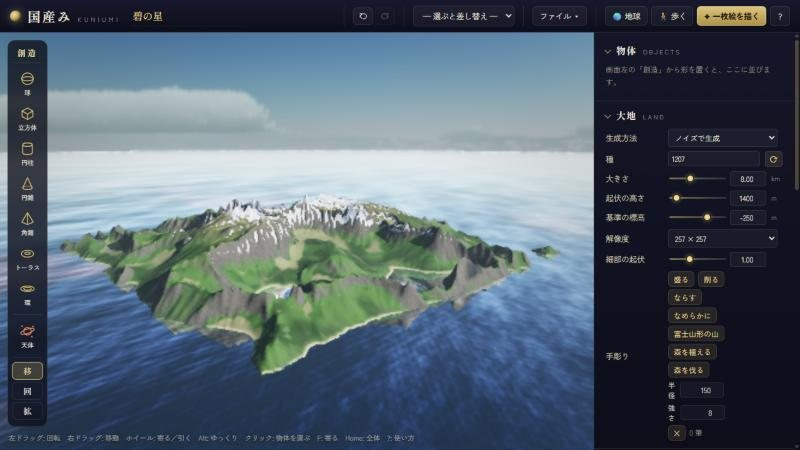
1 2 3 4 5 6- 1星の名前。シーンの題名だよ
- 2選ぶと差し替え 18 のひな形と ファイル メニュー
- 3🌏 地球 🚶 歩く ✦ 一枚絵を描く と ? 使い方
- 4創造パレット。球・立方体・環・天体などを置く
- 5景観。ここをドラッグして眺める
- 6設定パネル。大地・地形の性格・地表・植生・太陽・大気・水・一枚絵
コマンド早見表
| 操作 | 効果 |
|---|---|
| 左ドラッグ ／ 右ドラッグ ／ ホイール | まわりを回る ／ 平行に動く ／ カーソルの方へ寄る・引く |
| Alt を押しながら | ゆっくり動く（1/4 の速さ）。構図の微調整に必須！ |
| F ／ Home | 選んだ物体に寄る ／ 大地全体を見渡す |
| Ctrl+Z ／ Ctrl+Shift+Z | 元に戻す ／ やり直す（失敗しても何度でも戻れる） |
| Ctrl+S ／ Ctrl+O ／ Ctrl+Alt+N | 保存 ／ 開く ／ 新しい星 |
| Ctrl+Enter | 一枚絵を描く |
| G | 歩くモードへ |
| W E R（物体を選んだとき） | 移動 ／ 回転 ／ 拡大のハンドル |
| Delete ／ Ctrl+D ／ Esc | 物体の削除 ／ 複製 ／ 選択の解除 |
| ? | アプリの中の使い方 |
パネルの項目にマウスを乗せると説明が出るよ。各セクションの ↺ はそのセクションだけ既定値に戻すボタン。作業中のシーンはブラウザに自動で保存されるから、閉じても続きから遊べる！
星図鑑：18 のひな形で遊ぶ
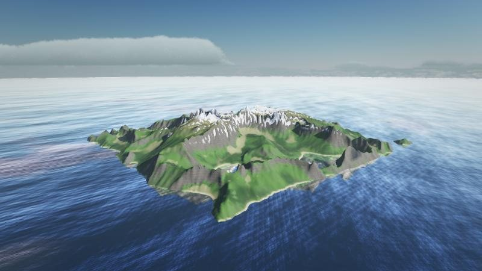
碧の星 — 午後の大陸
昼雪をいただく山並みの島。改造の土台に最適な、いちばんの基本形。
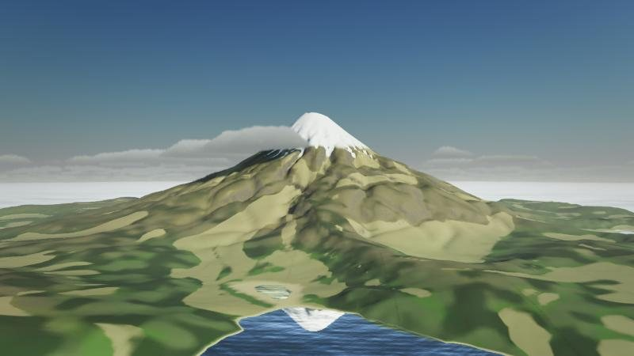
富士の見える湖
昼手彫りの「富士山形の山」と湖。逆さ富士を狙え！
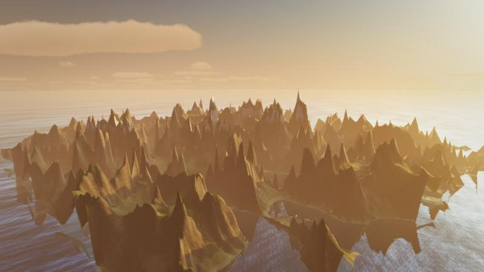
霧の朝の渓谷
朝谷に霧がたまる朝。光の筋がいちばん映える。
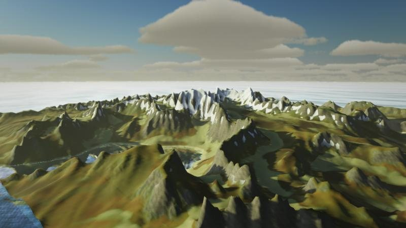
紅葉の山里
昼季節は秋。一枚絵では赤・橙・黄の木が混ざる森に。
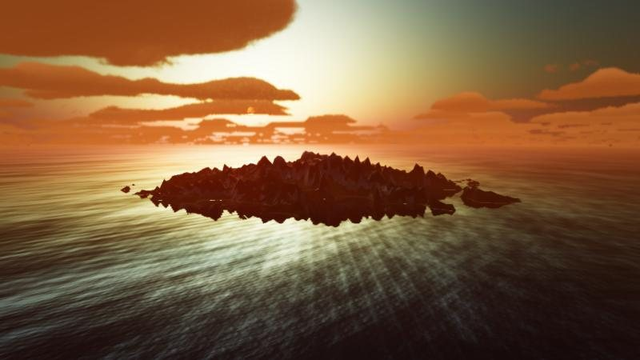
黄昏の群島
夕逆光の島々と、燃える雲。シルエットを楽しむ星。
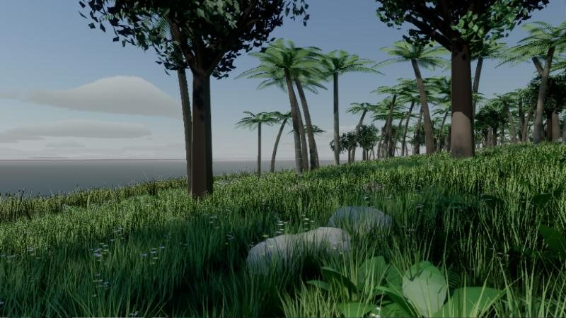
熱帯の環礁
昼青い海とヤシの林（一枚絵）。南の島へ上陸しよう。
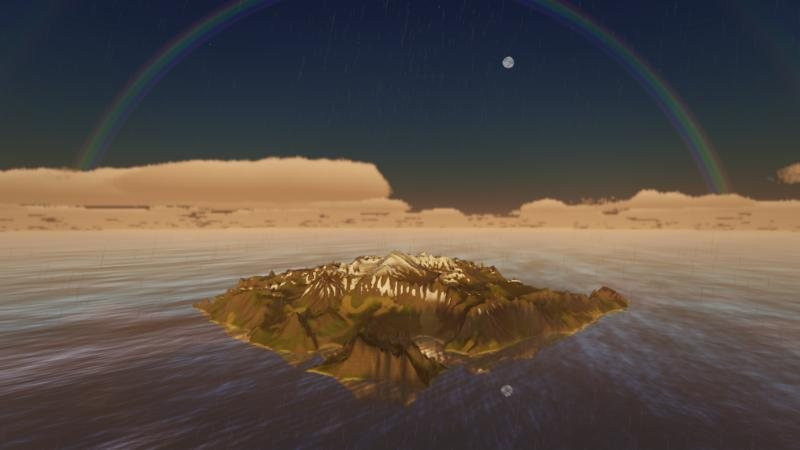
雨上がりの虹
天気雨と低い太陽で、主虹と淡い副虹が架かる。
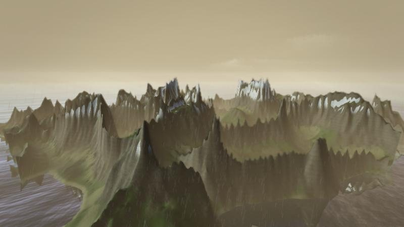
雷雨の山脈
天気稲光が走る嵐の山。歩くと雷鳴も聞こえる。
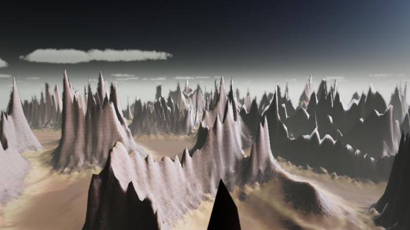
赤錆の荒野
異星鋭い岩峰が林立する荒れ地。SF の舞台にどうぞ。
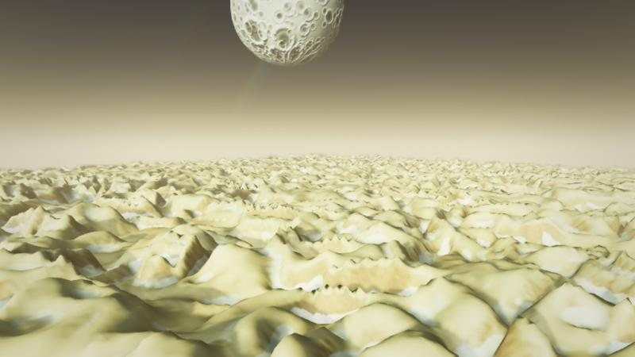
砂丘と昼の月
異星うねる砂丘の上に、クレーターの月が大きく浮かぶ。
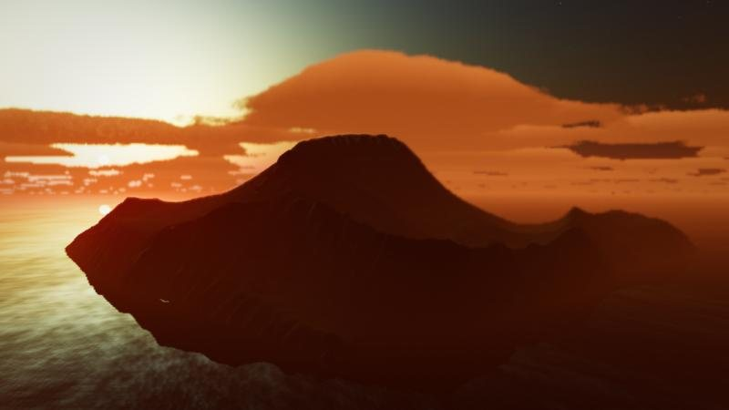
黒い火山島の夕暮れ
夕黒い溶岩の島と、赤い空。重厚な一枚に。
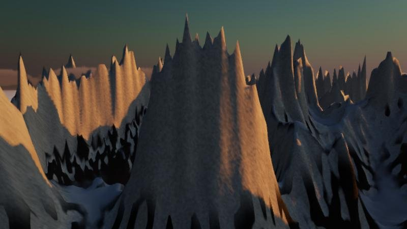
氷の巨峰
昼そびえ立つ氷の峰。一枚絵では岩の割れ目に雪が残る。
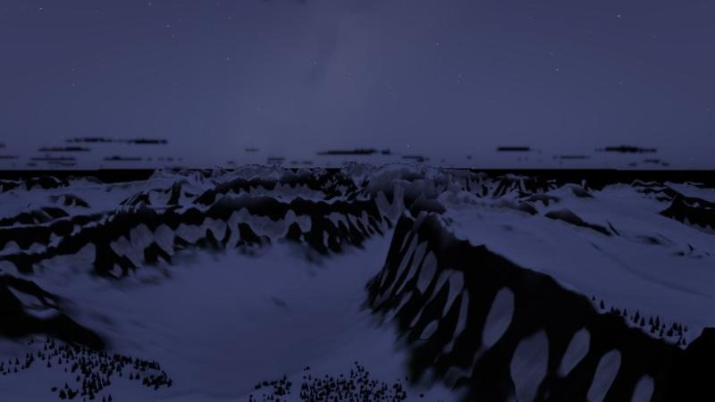
雪原の満月
夜月明かりの雪原。青い夜の光が美しい。
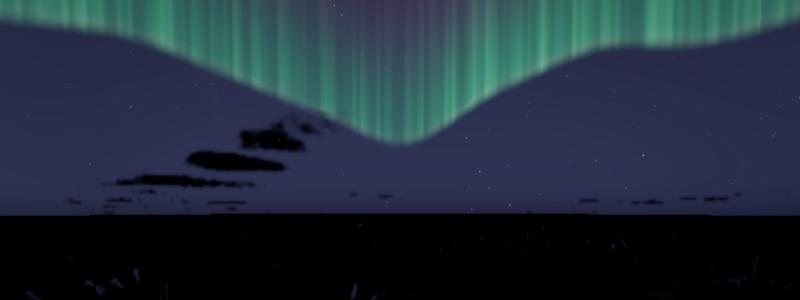
オーロラの峡湾
夜北の空に揺らめく光のカーテン。
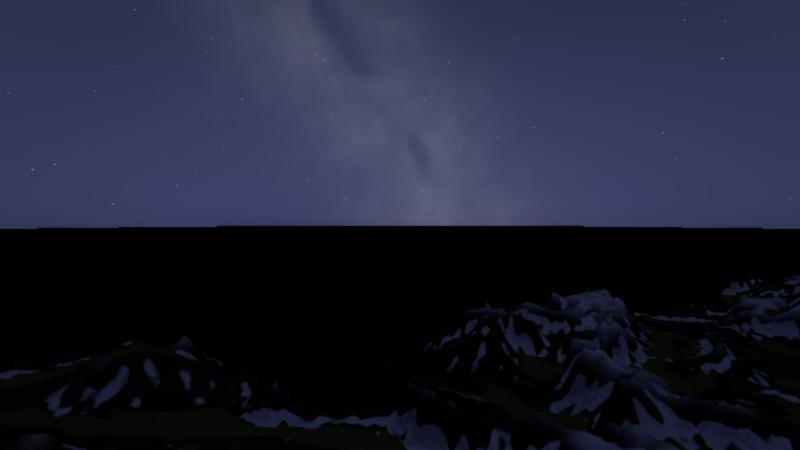
天の川の湖
夜天の川と流れ星。じっと待つと星が流れる。
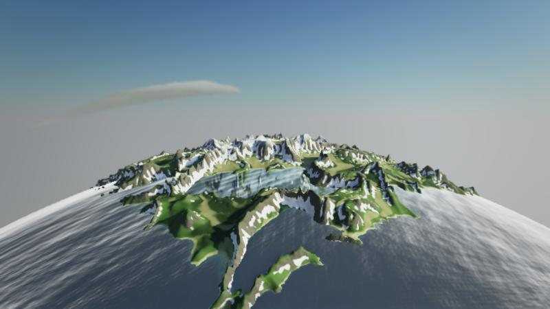
小さな星
星の形半径 8 km の豆粒惑星。地平線が丸い！
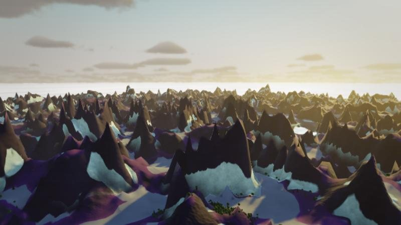
異界の湿原
異星紫の地面と不思議な色の空。夢の中の景色。
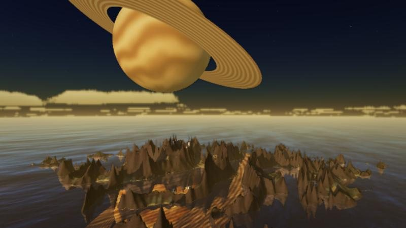
環のある惑星の空
星の形空に巨大な環の惑星。水面に映すかは物体ごとに選べる。
※ 写真はリアルタイム表示の画面（熱帯の環礁のみ一枚絵）。
大地をつくる
大地の基本
地形の性格（パラメータ早見表）
手彫り：神の手で地形を直す
パネル 大地 の 手彫り で筆を選び、景観を左ドラッグ（見回しは右ドラッグ）。筆の 半径 と 強さ も変えられる。
| 筆 | こう使え！ |
|---|---|
| 盛る ／ 削る | 山を足す・谷や湖を掘る。湖を掘ってから水をはると池ができる |
| ならす | 平らな台地や、家を建てる平地をつくる |
| なめらかに | 尖りすぎた所・段差を丸める |
| 富士山形の山 | クリックした所に、裾野の広い円錐の山と火口。大きさは筆の半径。中腹には放射状の沢も刻まれる |
| 森を植える ／ 森を伐る | 木を好きな所に。木の量が 0 でも植えた所には立つ |
- 「尾根の鋭さ」を上げて「山の丸み」も少し上げると、険しいのに角が取れた自然な山脈になる。
- 「侵食」は最後に足すのがコツ。形を決めてから削ると、谷の流れがきれいに出る。
- 手彫りの跡は保存しても、解像度を変えても残る。安心して彫り込もう。
地表・森・季節・水
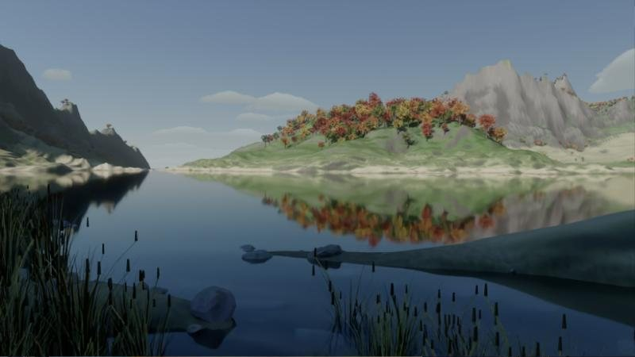
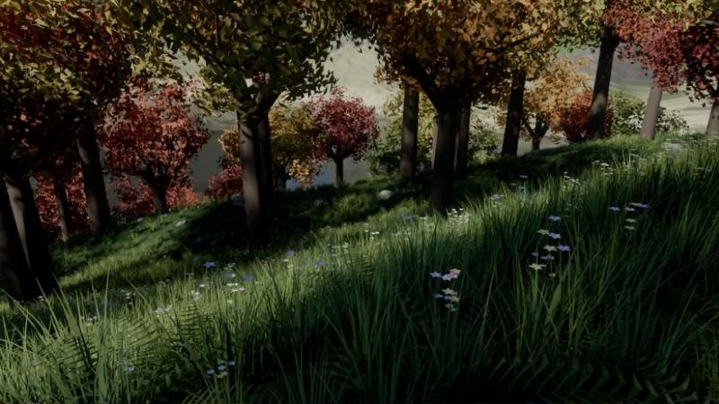
地表の色
低地 高地 岩肌 雪 水辺 の 5 色で大地を塗り分ける。雪線 で雪の積もる高さ、岩が出る傾斜 で岩肌の出やすさを決める。色を変えるだけで異星になるので、紫の低地・橙の岩なんて組み合わせも試してみて。
季節
| 季節 | 見た目 |
|---|---|
| 春 | 若葉の明るい緑 |
| 夏 | 濃い緑 |
| 秋 | 森が紅葉の赤や黄に。一枚絵では木ごとに赤・橙・黄・緑が混ざる |
| 冬 | 「冬の雪の高さ」より上の平らな所に雪。木は枯れ枝に |
植生
水
水をはる で海や湖ができる。水位 を上げ下げすると、海岸線がみるみる変わる。揺らぎ と 波の大きさ を下げると鏡のような水面に。
水位を上げて谷に海を入れると、入り江とフィヨルドができる。基準の標高と水位の組み合わせが、島の形を決める最大のレバーだ！
空と天気をあやつる
太陽と月
天気（大気 → 天気）
快晴・晴れ・薄曇り・曇り・霧・かすみ・雨・雷雨・雪をまとめて選べる。隣の ▶ を押すと、晴れ→曇り→雨→晴れ…と天気がゆっくり移り変わる。「いまの実際の天気と時刻」なら、その場所の本物の空模様に。
大気の調整
- 天気を 雨 にする
- 太陽の 高度 を 42° より下にする
- カメラを太陽に背を向ける向きにする
すると太陽の反対側の空に、主虹と淡い副虹がゆっくり現れる。二本の虹の間が暗いのも本物どおり！
物体と天体を置く
パレットの形（球・立方体・円柱・円錐・角錐・トーラス・環）を押すと、画面中央の先の地面に置かれる。クリックで選び、W E R で移動・回転・拡大。大きさは 1 m から 100 km まで！
素材で化ける
素材の見本は、石・苔むした岩・大理石・溶岩の星・青い惑星・ガス惑星・月・氷・黄金・鏡面・ガラス・恒星・市松・縞瑪瑙。模様・色・凹凸・粗さ・金属・発光・透けも細かく調整できる。🖼 画像を貼る… で手持ちの写真も貼れる（物体パネルへ画像を落としてもOK）。
「天体」ボタン
空に浮かぶ大きな星を置く。天体はかすみで消えず、影も落とさない。物体ごとに 水面に映す を切れば、湖に映り込まない。
- 天体 を押して、素材を ガス惑星 に
- 環 を置いて、天体と同じ位置へ。素材を縞模様に
- E の回転で環を少し傾け、R で惑星より大きく
ひな形「環のある惑星の空」はこの作り方。夕暮れにすると、空の主役になる！
歩く・飛ぶ・舟に乗る
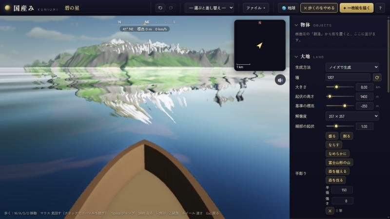
| 操作 | 効果 |
|---|---|
| WASD・マウス | 移動・見回す（画面をクリックするとカーソルが隠れる） |
| Space ／ Shift | ジャンプ ／ 走る |
| F | 飛ぶ ⇔ 歩くの切り替え（飛ぶときは Space/E 上昇、C/Q 下降） |
| Z | 双眼鏡（遠くを 6 倍で見る） |
| ホイール ／ Esc | 速さを変える ／ 元の見回しへ戻る |
| M | 音を消す |
一枚絵の構図は、歩いて探すのがいちばん。地面の高さから見ると、上から見下ろすより何倍も迫力が出る。いい場所を見つけたら Esc で戻って、Ctrl+Enter！
経路をたどる（GPX）
登山道などの経路（GPX）を ファイル → 経路（GPX）… か画面へのドロップで読み込むと、その場所の地形ごと取り込んで道を描く。歩くモードで R を押すと、経路に沿って自動で歩いてくれる。歩いた道すじも GPX で保存できる。
地球モード：本物の地球へ
地球を丸ごと宇宙から眺め、そのまま地上まで寄れる。全大陸・海底・衛星写真・きのうの実際の雲・夜の街の明かりまで本物だ。地名で検索して飛ぶこともできる。
| ボタン | 効果 |
|---|---|
| ここを景観に取り込む | 見ている辺りを、衛星写真・川・地名・建物つきの景観にする |
| ここに降りて歩く | 見ている所を取り込んで、そのまま地上に立つ |
| 早送り | 1 日を 40 秒で。昼夜の境と街の明かりが地球を回る |
ファイル → 地球の地形（地名・緯度経度）… で、ふるさとや旅先の名前を入れてみよう。実際の山と川の上を歩き、太陽の 日時から で「あの日のあの時刻」の光まで再現できる。
一枚絵を撮る：最終奥義
光の道すじを一本ずつ追いかける「パストレース」で、反射・屈折・柔らかい影まで計算した実写調の絵を描く。木・草・花・岩・葦・シダが一本一本立ち、最後に AI がノイズを取り除く。
撮影設定（パネル「一枚絵」）
- まず小さく試し撮り：960×540・32 サンプルで構図と光を確かめてから、本番の大きさで。
- カメラは低く：地面から 1.5〜3 m。手前に草や岩を入れると奥行きが出る。
- 斜めの光：太陽の高度 15〜35° で、横から当てると立体感が際立つ。
- 手前・中・奥：手前に草花、中ほどに湖、奥に山。三段の構図は鉄板！
- 構図の微調整は Alt を押しながらゆっくり。
- 保存は PNG のほか、HDR（.hdr）・OpenEXR（.exr）も。合成ソフトで仕上げたい人に。
描いている間はリアルタイム表示が止まる（GPU を一枚絵に譲るため）。Esc で中止できる。1280×720・64 サンプルで 1〜2 分が目安。
作例レシピ集
其の一 逆さ富士の朝焼け
- ひな形 富士の見える湖 を呼ぶ
- 水の 揺らぎ と 波の大きさ をぐっと下げて、鏡の湖に
- 太陽の 高度 を 3〜6° に、方位 を山の横へ
- 大気の 霧の厚み を少し足すと、朝もやの湖面に
- 湖の対岸に低く構えて、Ctrl+Enter
其の二 土星の昇る海
- ひな形 碧の星 から始める
- 天体 を押し、素材を ガス惑星 に
- 環 を同じ位置に重ね、E で 20° ほど傾ける
- 太陽の 高度 を 0〜3° にして夕暮れに
- 天体の 水面に映す を入れると、海に惑星が映る
其の三 南の島の木陰
- ひな形 熱帯の環礁 を呼ぶ（熱帯はすでに 0.75）
- G で歩いて、浜の近くの林へ
- 海の方を向き、ヤシの幹を画面の端に入れる
- Esc で戻って一枚絵。足元には幅広の葉の株も生える
其の四 紅葉の湖畔
- ひな形 紅葉の山里 を呼ぶ
- G で湖岸まで歩き、水際に立つ
- 対岸の紅葉の丘が水面に映る向きを探す
- 太陽を斜め後ろに回して一枚絵。手前に葦が生える
其の五 手のひらの惑星（ミニチュア写真）
- ひな形 小さな星 か、大きさ を小さくした島を用意
- 上から斜めに見下ろす構図にする
- 一枚絵の ぼけの強さ を上げ、ピントの距離 を島の真ん中へ
- 手前と奥がぼけて、おもちゃの模型のような一枚に！
裏ワザ・隠し要素
歩くモードで深い水（1.2 m より深い所）へ歩いて出ると、小舟に乗る。波で揺れ、舳先にしぶきが立ち、後ろには白い航跡が残る。
春か夏の晴れた夜、地面の近くを歩くと、周りを蛍が舞って数秒おきにふわっと光る。
雪の上や砂浜を歩くと、左右交互に足跡が残る。振り返ってみよう。雪が解けると消える。
天気を 雪 にしてしばらく待つと、季節に関係なく平らな所からまだらに積もる（約 1 分半でほぼ一面）。やむと少しずつ解ける。
晴れた夜空には天の川が流れ、ときどき流れ星が走る。ひな形「天の川の湖」でじっと待ってみよう。
雷雨の中を歩いていると、稲光から少し遅れて雷鳴が響く。近い雷ほど早く大きい。
雨の日は地面が濡れてつややかになり、近くの水面には雨粒の波紋が広がる。
パネル カメラの道すじ で視点をいくつか足し、▶ でその間をなめらかに飛ぶ。● で再生しながら録画すれば、空撮映像の完成！
やりこみミッション
書き出し・連携
| 形式 | 使いみち |
|---|---|
| シーン（.json） | 星の設計図。Ctrl+S で保存、友だちに渡せば同じ星が生まれる |
| glTF（.glb） | 地形・水・太陽・物体・カメラを 3D モデルとして。Blender などで開ける |
| Blender 用 .py | glb と同じフォルダで実行すると、空・カメラ・レンダー設定まで整う |
| ハイトマップ（16bit PNG） | World Machine・Gaea・Unreal・Unity などのゲームエンジンへ |
| 表示中の画面（PNG）／ 画面を録画（動画） | リアルタイム表示をそのまま画像や動画に |
逆に、.json・.glb・.png/.jpg（ハイトマップ）を画面へドロップすれば読み込める。Blender で彫り直した地形も glb で戻せる。
困ったときは
一枚絵が描けない
一枚絵は WebGPU を使うので、Chrome か Edge の最新版で開いてね。「GPU でエラーが出ました」と出たら、一枚絵の 地形の精細さ・大きさ・サンプル数を下げてみて。何度も出るときは、ブラウザを開き直すと直ることが多いよ。
視点がすぐ遠くへ飛んでいってしまう
Alt を押しながら操作すると 1/4 の速さになる。Home で全体の眺めに戻れるよ。
地形を壊してしまった
Ctrl+Z で何度でも戻れる。セクションの ↺ ならそのセクションだけ既定値に戻せる。
動きが重い
表示の解像度は自動で調整されるけど、解像度 を下げたり、雲や霧を減らすと軽くなるよ。
一枚絵に木や草が出ない
森の量 と 草（一枚絵） を確かめて。草はカメラが地面に近いとき（高さ数十 m まで）だけ置かれるよ。
作った星はどこに保存されるの？
作業中はこのブラウザに自動で残る。別の PC へ持っていくなら Ctrl+S でシーン（.json）を保存しよう。